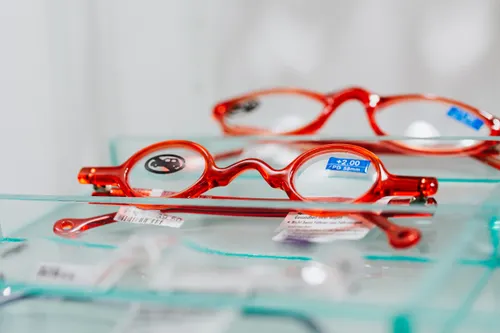
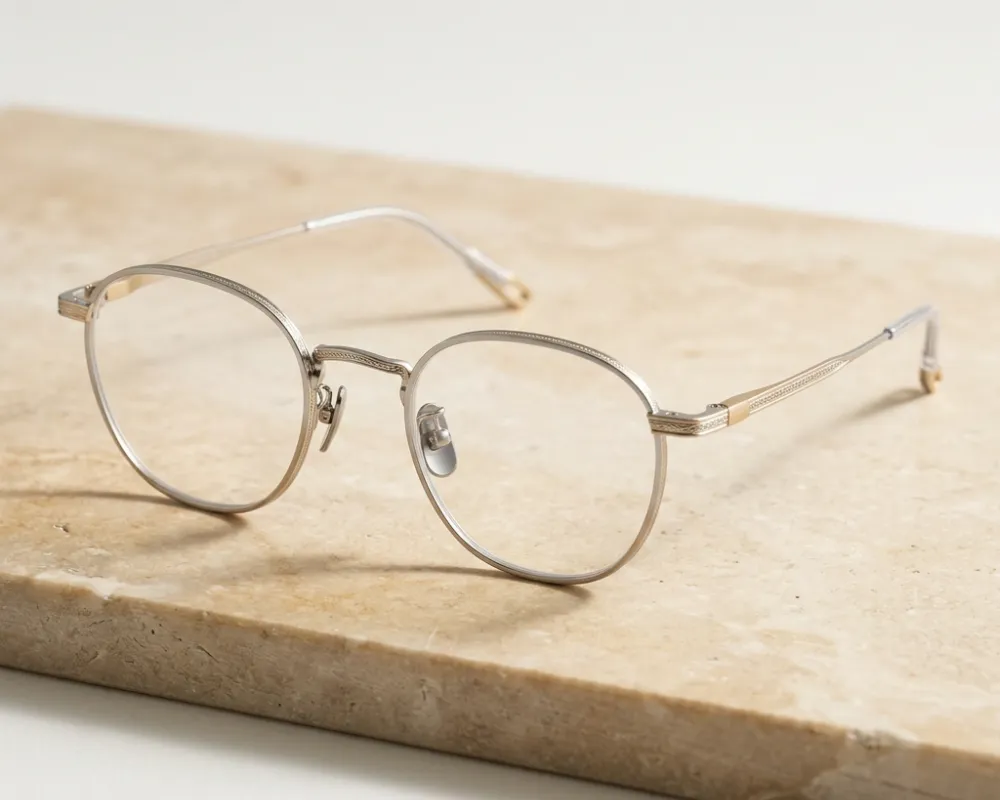

Sculpting Light, Defining Character
An optical house born from architectural purism. We conceive frames not merely as sight accessories, but as permanent structural sculptures for the human face.
Rejecting the ephemeral for the enduring.
STACKLY was established in response to an eyewear landscape saturated with disposable acetate and synthetic composites that lose luster within seasons. We set out to build an optical house guided by the principles of Bauhaus architecture: form following function, unvarnished material integrity, and mathematical proportion.
From our dual design studios in Milan and Kyoto, our master craftsmen synthesize European sculptural volume with the peerless precision of Japanese metallurgical heritage.
"A frame should never disguise the face; it should frame the mind's intent."
— The STACKLY Manifesto

The Three Pillars of STACKLY
Every frame that departs our workshop conforms strictly to our three uncompromised tenets of eyewear architecture.
Anatomical Equilibrium
Weight distribution centered meticulously across the sphenoid bone, eliminating bridge redness and temple pinch forever.
Organic Bio-Materiality
Cotton seed cellulose and plant tree resins cured over twelve months to resist thermal deformation and synthetic odors.
Optical Perfection
Medical-grade anti-reflective optics tuned to filter harmful UV rays while preserving chromatic fidelity in natural light.
Repairable Longevity
Engineered with modular, micro-screwed 5-barrel hinges to allow effortless servicing across multiple generations.
Crafted by Hands, Guided by Calipers
While contemporary industry relies on rapid injection molding, each STACKLY frame undergoes eighty-four manual operations. Blocks of cured acetate are milled on five-axis precision CNC machines before hand-beveling with miniature Japanese rasps.
The frames are then immersed in organic beechwood chips infused with pumice stone for seventy-two hours in rotating barrels. This traditional tumbling process achieves a deep, mirror-like organic luster that no spray coating can duplicate.
72 Hrs
Beechwood Tumbling
0.02 mm
Hinge Tolerance
100%
Hand Inspected
Mathematical Proportions
How our design atelier calculates angles, silhouettes, and shadow projection.
The Golden Ratio
Lens width to bridge ratio calculated according to classical proportion metrics for universal facial balance.
Beveled Edges
45-degree hand-chamfered browlines reflect ambient light without casting harsh shadows under the eyebrows.
Integrated Core Wire
Bespoke internal brass reinforcement featuring custom guilloché patterning visible through translucent acetates.
Counterbalanced Tips
Slightly thickened acetate paddles behind the ears to distribute mass backwards away from the nasal bridge.
Materials Without Compromise
We procure materials strictly from heritage mills with transparent provenance. Our titanium is sourced from Fukui Prefecture, renowned since the late 19th century for developing surgical-grade cold-forged metals.
Our bio-acetates are formulated by Mazzucchelli 1849 in Castiglione Olona, Italy. By eliminating diethyl phthalate plasticizers and substituting organic plant-based binders, our frames achieve hypoallergenic purity and biodegradable sustainability.

Masters of the Craft
Meet the visionaries guiding STACKLY’s frame architecture and optical innovations.

Armand Vance
Former architectural principal with 18 years in sculptural product design.

Dr. Vivienne Roux
Master Optometrist specializing in high-index mineral lens calibration.
Takashi Mori
Third-generation titanium smith overseeing cold-forge hinge development.
The Private Client Experience
What our clients experience when entering the world of STACKLY Haute Optique.
"Receiving my STACKLY frame was an unboxing experience reminiscent of a Patek Philippe timepiece. Every contour feels intentional."
"The digital fitting concierge nailed my temple measurements flawlessly. My optometrist in Berlin was stunned by the hinge tolerance."
"I wear the Lucent Clear Optical daily. People consistently stop to ask where the frame was made. True conversation pieces."
Experience Architectural Eyewear
Explore our complete catalogue of sixteen handcrafted silhouettes, available for immediate delivery worldwide.